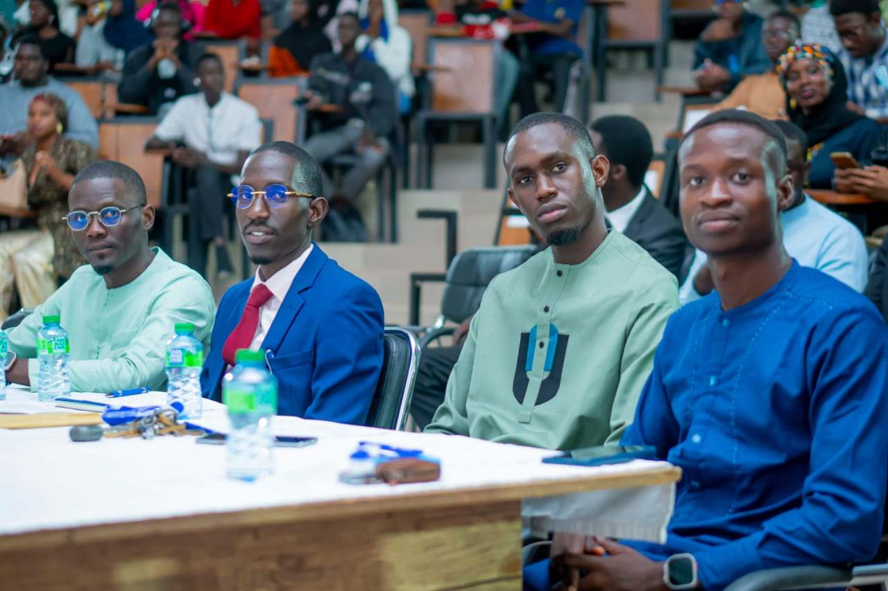
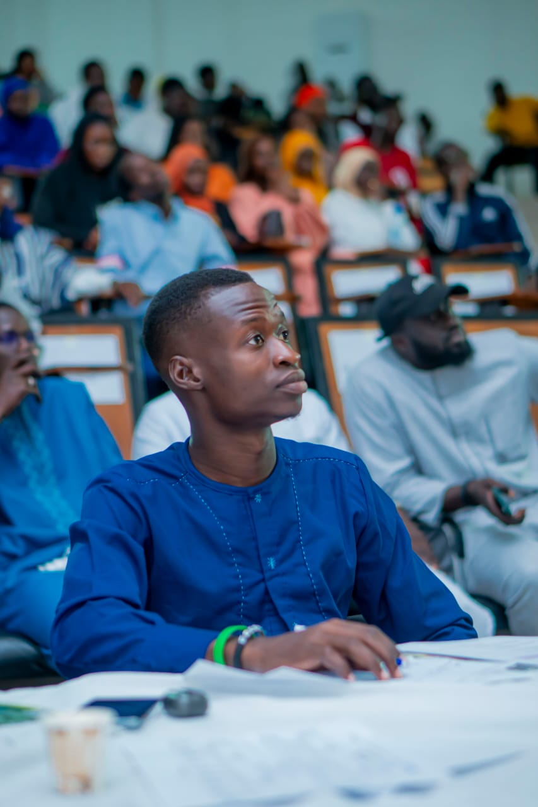
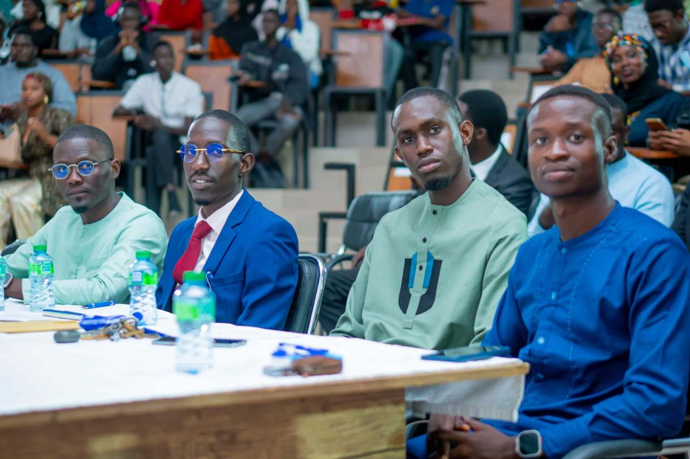
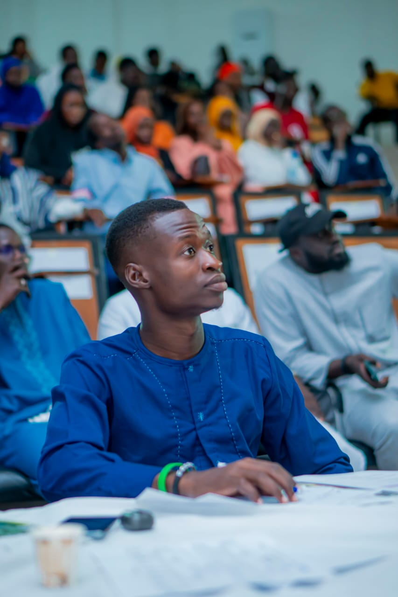

Découvrez nos projets et témoignages de réussite
"Je me nomme Oumou Sy. Je suis étudiante en troisième année de droit. Avant la formation, j'avais des idées mais pas toujours le courage de les faire entendre. J'ai toujours aimé tout ce qui concernait l'art oratoire, mais avec peu de confiance. Après ma formation de prise de parole avec Berekia, je me suis sentie confiante et forte. J'ai su que j'avais les bonnes bases pour m'imposer dans le milieu oratoire. À la dernière semaine de ma formation, j'ai eu le courage, sa motivation et son soutien pour me lancer dans un concours de plaidoirie. Cerise sur le gâteau: j'ai remporté mon premier trophée pour une première participation. Il ne m'a pas seulement appris à prendre la parole, il m'a appris à croire en ma voix. L'amour avec lequel il forme se lit aisément dans ses yeux et ses actes. Il sait être patient et son humilité est exceptionnelle. Grâce à lui, je me tiens aujourd'hui avec plus d'assurance, je m'exprime avec plus de clarté et surtout, je n'ai plus peur d'être écoutée. Merci du fond du cœur à cet humble et bienveillant homme: coach Berekia. Je ne cesserai jamais de le remercier."
"Moi c'est Mame Binta Diallo. Je tenais à vous remercier pour cette formation qui a été bien plus qu’un simple apprentissage technique. Vous avez su créer un cadre rassurant où chacun pouvait s’exprimer sans crainte du jugement. Grâce à vous, j’ai compris que prendre la parole ne consiste pas seulement à parler, mais à transmettre une énergie, une conviction, une présence. Les conseils sur la posture, la gestion du trac et l’intonation m’ont particulièrement marquée. Et les résultats ont été immédiats. Juste après cette formation, je suis passée d’une fille qui avait peur de parler en public à la gagnante d’une compétition de plaidoirie organisée par mon UFR, l’UFR des Sciences Économiques et de Gestion (SEG). Cette victoire n’est pas seulement un trophée. Elle est la preuve que votre accompagnement transforme réellement. Je me sens aujourd’hui plus confiante, plus structurée, et surtout plus légitime lorsque je prends la parole. Merci pour votre patience, votre écoute et votre exigence bienveillante."
Formation de prise de parole en public animée avec l'amicale des étudiants ressortissants de Tambacounda.
Formation axée sur le développement personnel et le leadership pour les membres de la structure Voix des Jeunes.
Reconnaissance
Membre de Jury lors de la competition de plaidoirie organisee par le SOHIC en collaboration avec la FAMES / UGB.
Reconnaissance
Membre de Jury lors de la competition de genie en herbe "The Best" organisee par la FAMES / UGV.
 




Media & Impact
Un podcast dedie a la sante mentale, avec comme invite Ibrahima S. Mbaye, etudiant en droit prive / affaires et entreprises, et fondateur du cabinet LegalEase.